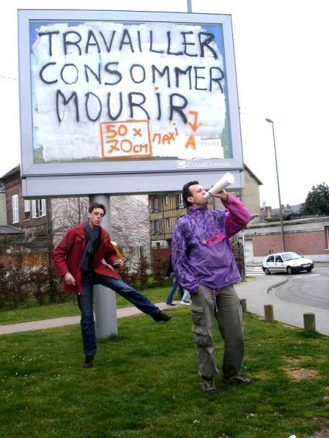

| |
Site dédié à la publication d'informations communiquées par le Collectif des déboulonneurs. En aucun cas ce site n'appelle à des actions illégales. | |
 |
||
|
Accueil du site > Evreux > Compte rendu de l’action du 23 février 2008 à Evreux
Le troisième samedi matin de février de l’an sarkosien 01... Evreux...9h48... Il fait bon, voire beau dans la capitale de l’Eure, bien proprette ! Un parking près d’un cinéma multi-salles aux tarifs exhorbitants, comme d’hab’...Un gros fast-food juste à coté, comme d’hab’...Une université, en face, comme d’hab’... Et des supports d’affichage Clear com qui nous font de l’oeil !!!! Une rangée d’arbres, survivante d’une ancienne limite militaire et, au milieu, une quinzaine de personnes. Certains l’oeil pétillant et déterminé, habillés de vêtements tachés de peinture, d’autres au regard hésitant et timide. De sympathiques "candides" ont répondu "présent", c’est une bonne journée !!! Une rapide présentation ! L’objectif du jour, préparé il y a peu au cours d’une réunion du "noyau dur",est une déambulation dans le centre ville, avec recouvrement d’obstacles urbains (sucettes et abris bus) de film plastique agrémenté de "barbouillages" de slogans à la bombe. Le tout avec un final sur 4x3 ... Celui-là même qui nous nargue juste là, surplombant le parking... Une petite boucle en ville qui nous fera passer par le marché, haut lieu de distribution de tract et de rencontres en ces périodes électorales... A noter, la présence d’une "tête de liste" de gauche, souhaitant être tenue au courant de nos actions futures, qui nous accompagnera dans notre pérégrination jusqu’au... marché ! Et de deux charmantes et fidèles (autant aux rendez-vous que dans le contenu de leurs articles !) journalistes de la presse locale, accueillies par le responsable presse pour cette action, Manu aidé de Fred B. La présence annoncée de l’un de nos mentors Rouennais, venu pour l’occasion nous prêter main forte, nous gonfle d’une énergie supplémentaire... Tout le monde est là ! Après la répartition pragmatique du "qui fait quoi" (porter le sac de tracts, les bombes, le film plastique, les gabarits,...) notre serpent "constricteur de pub" s’ébranle enfin muni de sa quinzaine de membres locomoteurs. Il est 10.15 ! Première sucette au bord du parking, à quelques mètres de notre point de départ : film plastique tout autour puis bombage de notre gabarit de 50 x 70 cm, reprenant la silhouette et la taille de l’affichage que nous revendiquons... Çà marque et çà marche ! C’est visuel et parlant. Bravo à Fred B. pour l’idée ! Pas de dégradation et un effet garanti ! Coté slogans quelques classiques : "la pub ment", "la pub fait de-penser", "ici bientôt un arbre",... Tout au long du parcours nous expérimenterons le "slogan contextuel" exploitant les images et lettrages des pubs pour les détourner à notre avantage. Comme avec ce M en biais d’un fast food mondialisé, transformé pour l’occasion en B de "malbouffe" ! Sur la plupart des sucettes, sous le film, nous laissons quelques tracts à hauteur de vue permettant aux passants de comprendre le sens même après notre départ. A deux occasions, Fred L. nous sort deux superbes "affiches puzzle", réalisées à partir de feuilles A4 imprimées, assemblées auparavant et dessinant un motif/slogan de taille idéale et adapté au format choisi. Ici l’obstacle urbain... Les affiches "puzzle" ont été réalisées avec Rasterbator. Pour en savoir plus, un article décrivant cet outil est disponible ici : http://www.framasoft.net/article448... Au total, 7 sucettes et un abri bus "double" ainsi revêtus de leurs emballages de poulet de supermarché ! C’est peu et on peut faire mieux... Mais les discussions nombreuses nous ont beaucoup absorbé de temps et d’énergie. La plupart forts sympathiques ; messages de soutien, d’encouragements,... Parfois de l’incrédulité vite transformée en compréhension même si le plastique et la bombe de peinture "c’est pas très écologique tout çà !" Rares sont les "ronchons" et ils ne s’arrêtent pas pour discuter, comme très souvent ! Distribution de tracts à foison, les plus novices s’y collent bien ! On en aura donné plus de 600 ! Parmi les moments les plus intéressants, quoique sans doute "un poil" hors propos, restent ces discussions sur le marché avec les représentants de quelques-une des listes se présentant aux municipales. Notamment celle avec une femme et un homme, conseillers municipaux de l’actuelle majorité... Discussion cordiale sur nos motivations, les formes de revendications, notre questionnaire aux candidats ("Oui ! C’est vrai ! Y’a trop de pub partout !"),... débouchant sur la malbouffe, la consommation éhonté, l’agression obligatoire, le sexisme,...( "alors là vous exagérez ! ’Faut tout de même se priver du coté pratique de M.. D.. lorsqu’on rentre de vacances avec ses enfants dans la voiture...Eh oui ! Les contrats précaires y’en a partout maintenant chez eux comme ailleurs ! Vous êtes un peu extrêmistes quand même !). Effroyable fatalisme, inquiétante élection ! Sourires crispés, poignées de mains, hochements de tête positivistes,... on est en campagne ! N’empêche que le "règlement local de publicité" çà leur dit rien à tous ces "braves gens"... Nous terminerons notre parcours et l’initiation de nos nouveaux et jeunes déboulonneures par le barbouillage du magnifique 4x3 du parking ! La cerise sur le gâteau ; c’est là que les barbouilleurs, les seuls qui risquent quelques ennuis avec la justice, entrent en action ! Echelle, peintures, seaux, rouleaux, pinceaux... Nouvelle technique pour nous autres, "la bleuzaille" : toute la surface en blanc (peinture à l’eau, çà sèche vite !) puis slogan d’une autre couleur ! Super visible et de très loin !!! Barbouillé au recto d’un superbe ’Travailler-consommer-mourir" et au verso d’un classique "pub = matraquage". Idéalement situé sur un rond-point passant, il restera dans cet état jusqu’à mardi, soit 3 jours pleins ! Pendant ce temps le carrefour est pris d’assaut par nos distributeurs de tracts et par nos annonceurs publics, munis de porte-voix coniques en carton plastifié, vantant les mérites de l’action de désobéissance civile non-violente, assumée pleinement et sereinement par les déboulonneures de pub, dénonçant la violence de l’affichage publicitaire... La police NATIONALE viendra nous rendre une visite courtoise, dépêché par les RG (de leur propore aveu), après un premier passage en voiture. Notre "chargé de police" les tiendra à distance, leur proposant même de venir parler en lieu sûr (une pelouse) plutôt que sur la voie publique, le temps de leur expliquer la démarche (c’est leur première vraie intervention à Evreux pour notre troisième action, à 150 m de leur poste !) et pour nos 4 barbouilleurs de préparer leurs pièces d’identité. Identité qu’ils relèvent, certains refusant gentiment de donner leur numéro de téléphone... Tout le monde y passe, y compris les novices distributeurs de tracts. Quelques échanges bien courtois... Ils font leur boulot poliment, on fait "le nôtre" également ! Encore quelques minutes sur le site puis nous nous retrouvons à la case "départ" pour le pot/débriefing/collecte d’argent de mise. Nous nous promettons de convier les visiteurs novices à la prochaine réunion et convenons que mai/juiçn sera une bonne période pour le prochain "coup" !!! Tout aurait pu s’arrêter là avec quelques gazouillis d’oiseaux en fond sonore... Mais... Certains d’entre nous comme à chaque fois, décident de se retrouver autour d’un bon repas, dans un resto du coin. En nous y rendant, notre première surprise fut de trouver une équipe de nettoyage de la communauté d’agglomération d’Evreux en "pleine action", sur l’une des sucettes que nous avions filmées, à coté de notre resto ; le duo, l’un dans le camion l’air suspicieux, l’autre bonhomme et jovial nous invitant à recommencer le dimanche car "çà nous f’ra des heures sup’ !", ont oeuvré sous nos regards amusés mais très émus ! Nous constatons que LE NETTOYAGE DES SUPPORTS D’AFFICHAGE PRIVÉ EST EFFECTUÉ PAR UN SERVICE PUBLIC !!!! Belle hypocrisie qui nous renforce dans nos convictions d’opacité budgétaire et de connivence commerciale entre la ville et les annonceurs. Le deuxième "choc" fut, alors que nous sortions fumer une cigarette avant le dessert, de surprendre deux agents de la police MUNICIPALE scrutant à travers la fenêtre du restaurant jouxtant celui de notre pause bien méritée, visiblement à la recherche de quelque chose ou de quelqu’un. Un jeune homme et une femme entre deux âge composait de couple de techniciens de la sûreté populaire... La femme se tourne brusquement vers moi et, l’air sévère, m’ordonne de montrer mes mains. Je comprends brusquement qu’ils sont précisément à notre recherche et QU’ILS ONT ÉTÉ RENSEIGNÉS PAR LE SERVICE DE NETTOYAGE DE LA COMMUNAUTÉ D’AGGLOMÉRATION D’EVREUX ; UNE BELLE COLLABORATION DANS TOUTE L’ACCEPTATION DU TERME !!! Bientôt rejoint par mes comparses "aux mains peintes", une deuxième interpellation s’opère. Celle-là beaucoup plus "tendue" que la précédente au cours de laquelle outre nos identités relevées fort peu aimablement, nous subissons les invectives de nos deux uniformisés de service. "C’est qui l’auteur des graffitis sur le panneau de la mairie. ’Va falloir aller nettoyer çà tout de suite...". Le ton monte tranquillement. Visiblement habitués à voit trembler le citoyen à l’emploi d’un tel registre, ils voient rapidement que nous savons nos droits et pesons pleinement et sereinement la responsabilité de nos actes... Et finalement, nous rentrons terminer notre repas après avoir récupéré nos pièces d’identité, avec le sentiment de malaise et de moquerie que légitimement nous inspirait cette scène ridicule et digne d’une république bananière. L’épilogue nous a valu une entrée ridicule du jeune garde chiourme hurlant presque : "’faut rester dehors pendant qu’on vérifie tous çà" , vite rembarré par une poignée d’hommes en colère, exigeant qu’on leur parle poliment...Il n’insista pas ! Les sbires de la ville, tels les habitants d’une fourmillière aux ordres de la reine locale, entendait donc régler eux-même les problèmes, ignorant plus ou moins consciemment, les procédures d’une justice républicaine. Ne faudrait-il pas remplacer police municipale par milice locale ? Çà promet... Manu pour le collectif des Déboulonneures de l’Eure

|
|
Site utilisant SPIP - Hébergement Ouvaton
|